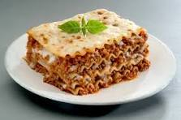

Lasagna

Description
Indulge in the ultimate comfort food experience with our Hearty Homestyle Lasagna! Layers
of perfectly seasoned meat sauce, creamy béchamel, and gooey melted cheese come together
to create a symphony of flavors that will transport you straight to the heart of Italy. Ge
t ready to savor every bite of this timeless classic.
Ingredients
- 1 pound ground beef
- 1 pound Italian sausage, casings removed
- 1 onion, finely chopped
- 3 cloves garlic, minced
- 1 can (28 ounces) crushed tomatoes
- 2 cans (6 ounces each) tomato paste
- 1/2 cup water
- 2 teaspoons dried basil
- 2 teaspoons dried basil
- 2 teaspoons dried oregano
- 1 teaspoon salt
- 1/2 teaspoon black pepper
- 1/4 teaspoon red pepper flakes(optional)
- 12 lasagna noodles, cooked al dente
- 4 cups shredded mozarella cheese
- 1 1/2 cups grated Parmesan cheese
- Bechamel sauce :
- 1/2 cup unsalted butter
- 1/2 cup all-purpose flour
- 4 cups whole milk
- 1/2 teaspoon salt
- 1/4 teaspoon nutmeg
Steps
- Brown the meat : In a large skillet over medium heat,
brown the groundbeef and Italian sausage until fully cooked. Add chopped
onions and minced garlic, sautéing until the onions are
translucent.
- Create the Tomato sauce : in crushed tomatoes, tomato paste, water, basil, oregano, salt,
black pepper, and red pepper flakes (if using). Simmer the sauce for 30 minutes,
allowing the flavors to meld together.
- Prepare the Bechamel Sauce : In a separate saucepan, melt butter over medium heat. Add flour,
whisking continuously to create a roux. Gradually pour in the milk, stirring constantly to avoid lumps. Add salt
and nutmeg, simmering until the sauce thickens. Remove from heat.
- Assemble the layers : Preheat the oven to 375°F (190°C). In a large baking dish, spread a thin
layer of meat sauce. Place a layer of cooked lasagna noodles on top. Add a generous portion of meat sauce, followed
by a layer of béchamel sauce and a sprinkle of mozzarella and Parmesan cheeses. Repeat the layers, finishing with a
cheese topping.
- Bake to Perfection : Cover the baking dish with foil and bake in the preheated oven for 25 minutes.
Remove the foil and bake for an additional 10-15 minutes or until the cheese is golden and bubbly.
- Let it rest : Allow the lasagna to cool for 10-15 minutes before slicing. This helps the layers set,
ensuring each serving is a perfect blend of flavors and textures.
- Serve and Enjoy! Cut generous portions of this Hearty Homestyle Lasagna and serve with a sprinkle of
fresh basil or parsley. Pair with a side salad and your favorite red wine for an unforgettable dining experience. Buon appetito!